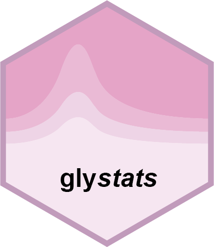

Weighted Gene Co-expression Network Analysis (WGCNA)
gly_wgcna.Rd![[Deprecated]](figures/lifecycle-deprecated.svg)
Usage
gly_wgcna(
exp,
powers = c(1:10, seq(12, 20, by = 2)),
network_type = "unsigned",
tom_type = "unsigned",
min_module_size = 30,
deep_split = 2,
merge_cut_height = 0.25,
add_info = TRUE,
...
)
gly_wgcna_(
expr_mat,
powers = c(1:10, seq(12, 20, by = 2)),
network_type = "unsigned",
tom_type = "unsigned",
min_module_size = 30,
deep_split = 2,
merge_cut_height = 0.25,
...
)Arguments
- exp
A
glyexp::experiment()object.- powers
A numeric vector of soft thresholding powers to test. Default is
c(1:10, seq(12, 20, by = 2)).- network_type
Character string specifying network type. Allowed values are "unsigned", "signed", "signed hybrid". Default is "unsigned". Passed to the
NetworkType`` argument ofWGCNA::blockwiseModules()`.- tom_type
Character string specifying topological overlap matrix type. Allowed values are "none", "unsigned", "signed". Default is "unsigned". Passed to the
TOMType`` argument ofWGCNA::blockwiseModules()`.- min_module_size
Minimum module size for module detection. Default is 30. Passed to the
minModuleSize`` argument ofWGCNA::blockwiseModules()`.- deep_split
Integer value between 0 and 4. Provides a simplified control over how sensitive module detection should be to module splitting. Default is 2. Passed to the
deepSplit`` argument ofWGCNA::blockwiseModules()`.- merge_cut_height
Dendrogram cut height for merging of modules. Default is 0.25. Passed to the
mergeCutHeight`` argument ofWGCNA::blockwiseModules()`.- add_info
A logical value indicating whether to add variable information to the modules tibble. Only applicable to
gly_wgcna().- ...
Additional arguments passed to
WGCNA::blockwiseModules().- expr_mat
(Only for
gly_wgcna_()) A numeric matrix with variables as rows and samples as columns.
Value
A list with three elements:
tidy_result: A list containing two tibbles:modules: Module assignments and membership values containing the following columns:variable: Variable namemodule: Module assignment (color name)membership: Module membership value (correlation with module eigengene)
eigenvalues: Module eigenvalues containing the following columns:module: Module name (color name)sample: Sample nameeigenvalue: Module eigenvalue (first principal component of module expression)
raw_result: The raw WGCNA blockwiseModules objectmeta_data: A list containing metadata from the input experiment The list has classesglystats_wgcna_resandglystats_res.
Details
Perform WGCNA analysis to identify co-expression modules and their eigenvalues. The function uses WGCNA package to construct weighted gene co-expression networks, detect modules, and calculate module membership and eigenvalues.
The function performs log2 transformation on the expression data (log2(x + 1)) before WGCNA analysis.
gly_wgcna() is the top-level API that works with glyexp::experiment() objects and supports
the add_info parameter for joining experiment metadata.
gly_wgcna_() is the underlying API that works with matrices directly,
providing more flexibility for users who don't use the glyexp package.
Analysis Steps:
Soft threshold selection using
WGCNA::pickSoftThreshold()Network construction and module detection using
WGCNA::blockwiseModules()Module membership calculation based on correlation with module eigengenes
Results formatting into standardized tibbles